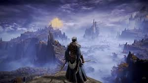

Espaço sideral, espaço exterior ou simplesmente espaço é toda a área física do universo não ocupada por corpos celestes.[1]
Não há uma clara definição dos limites do espaço em relação à Terra ou mesmo de sua extensão. A linha de Kármán, contudo, uma estimativa de altitude de 100 km (62 mi) acima do nível do mar,[7] é consensualmente entendida como o "início" desse ambiente, sobretudo em tratados espaciais e registros aeronáuticos e astronáuticos. Um quadro legal foi estabelecido pelo Tratado do Espaço Exterior, aprovado pela Organização das Nações Unidas em 1967, com 98 países signatários e outros 27 assinantes. Esse postulado impede qualquer reivindicação de soberania nacional sobre o espaço e permite, a todas as nações, sua livre exploração.
 Descoberta: 350 A.C.
Descoberta: 350 A.C.
Na China antiga, existiam várias escolas de pensamento a respeito da "natureza dos céus", algumas das quais se assemelham ao nosso entendimento moderno. No século II, o astrônomo Zhang Heng, ficou convencido que o espaço devia ser infinito, se estendendo muito além do "mecanismo" de sustentação do Sol e das estrelas. Os livros remanescentes da escola Hsüan Yeh, dizem que os céus não tinham limites, "vazio e desprovido de substância". E continuando: "o Sol, a Lua e o conjunto de estrelas, flutuam no espaço vazio, estando parados ou em movimento".[13]
The Lands Between is the world of Elden Ring, and those who live in The Lands Between were blessed by Grace through the Elden Ring and the Erdtree. Those who were blessed by the Elden Ring are characterized by having a golden aura that can be seen in their eyes. However, at some point, some of those who were blessed lost their grace; they were exiled and labeled the Tarnished. As time passed, for unknown reasons, the Elden Ring was shattered and its shards were scattered across the Lands Between. The largest of these pieces were called Great Runes and were claimed by the six Demigod children of Queen Marika the Eternal, causing them to inherit different powers and have been physically changed and twisted due to being corrupted by the power of these runes.
Melina holds contempt for the Frenzied Flame and believes that whoever lords over the chaos and damage it brings is no Lord at all. If the Tarnished takes the Frenzied Flame before the event at the Forge of the Giants, she will leave them and will threaten to deliver them Destined Death once they become Lord of the Frenzied Flame.
